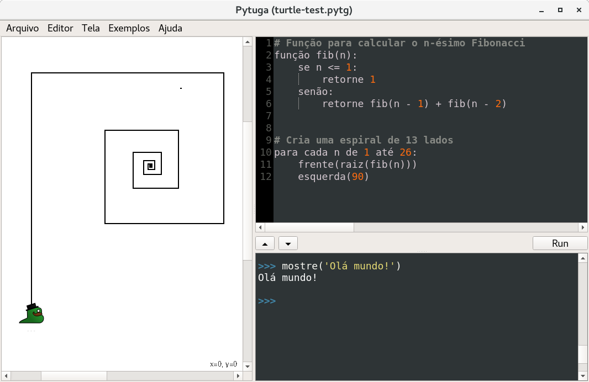

Your browser doesn't support the features required
by impress.js, so you are presented with a simplified version of
this presentation.
For the best experience please use the latest Chrome,Safari
or Firefox browser.
Learning programming is hard...
- Common technical problems are frustrating
- Students often do not feel motivated*
- First impressions are often negative
- System language such as Java and C++ can aggravate those problems
*not everybody loves Fibonacci numbers
Non-English speakers suffer twice:
# WAT??
bestimmen abfolge(x):
ob x <= 1:
Rückkehr 1
sonst:
Rückkehr abfolge(x - 1) +
abfolge(x - 2)
Students should learn programing in their native language...
...in a fun and engaging environment.
we introduce
transpyler*
It is a framework for extending Python with localized keywords,
standard lib functions, and types. Transpyler makes it easy to adapt Python
to any language*.
*It is already used by Pytuguês: Python to Portuguese extension
it also integrates a
turtlegraphics implementation

*it comes in any transpyler-based implemenation.
How does it work?
- It translates sources at the token level
- Transpiles source back to Python
- Functions use gettext for localization
- The goal is to extend Python with translated keywords without replacing the original ones.
from transpyler import Transpyler
pytuñol = Transpyler(
name="Pytuñol",
translations={
'def': 'función',
'si': 'if', 'entonces': 'else',
'regresar': 'return', ...
}
)
# Now we can execute Pytuñol code
pytuñol.exec(...)
Important features
- A Jupyter kernel
- Python shell with bells and whistles
- Remote code execution and notebooks
- QTurtle application shown on the screenshot
- It can use translate.google.com for help
- Everything works around a single Transpyler subclass
Small history
- 2015, Pytuguês: supported only pt-BR.
- 2017, Traspyler: the recent effort to make that original implementation language agnostic.
- Pytuguês is now only a thin layer around the Transpyler framework.
- We created Pytuñol, es-BR, for this conference.
It is in an early development stage, but it has been used in the classroom
to teach both undergraduates and children.
Pedagogical results
- We only have data for Pytuguês
- Used by ~200 students
- It offers a natural migration path to Python
- Students enjoy the GUI environment
- Python has a shallow learning curve when compared to other languages such as C
Alternatives in Portuguese*
- Scratch
- Mature graphical environment
- A natural starting point before Pytuguês
- Portugol
- Multiple implemenations (usually PASCAL inspired)
- Compiled and statically typed
- Cannot use the ecosystem of the host language
*we only consider localized computer languages
Why python?
- Dynamic interpreted language
- The REPL is useful for exploration
- Students focus on algorithms rather than on type declarations and on compilation
- Ecosystem
- Jupyter notebooks are great teaching resources
- Good libraries for common tasks:
- games, graphics, web, numerics, etc
- Widely used as a first programming language
Colaboration is welcome!
- We want to support other idioms
- Improve English and Portuguese translations*
- The Qt graphical interface is still unstable
- + the usual chores:
- documentation, testing, packaging, etc
*there is still some code left in Portuguese.